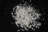

|
|
(For further information on spectroscopy, see:
http://speclab.cr.usgs.gov)
TITLE: Alunite GDS82 Na82 DESCRIPT
DOCUMENTATION_FORMAT: MINERAL
SAMPLE_ID: GDS82
MINERAL_TYPE: Sulfate
MINERAL: Alunite (Alunite Group)
FORMULA: (Na,K)Al3(SO4)2(OH)6
FORMULA_HTML: (Na,K)Al3(SO4)2(OH)6
COLLECTION_LOCALITY: Sadler, Texas, USA
ORIGINAL_DONOR: Roger Soffregen
CURRENT_SAMPLE_LOCATION: USGS Denver Spectroscopy Laboratory
ULTIMATE_SAMPLE_LOCATION: USGS Denver Spectroscopy Laboratory
SAMPLE_DESCRIPTION:
Low temperature diagenetic variety of alunite. May be from a lake deposit. Composition is 82 mole% Na by atomic absorption: See: Stroffregen, R., and Alpers, C., 1992, Observations on the unit-cell dimensions, H2O contents and del D values of natural and synthetic alunite: American Mineralogist, v.77, p. 1092-1098.
IMAGE_OF_SAMPLE:

END_SAMPLE_DESCRIPTION.
XRD_ANALYSIS:
GDS82 Na-(82) alunite 40 kV - 30 mA, 6.5-9.5 keV (n8Oalnt.out) References: JCPDS #41-1467; Huebner's reference patterns Found: alunite, quartz, very very weak reflections at 2.38 and 1.720 A. Comment: the alunite is probably a single phase; its lattice spacing's match those of natroalunite. The alunite has sharp peaks, indicating good crystallinity and compositional homogeneity
see: Stroffregen, R., and Alpers, C., 1992, Observations on the unit-cell dimensions, H2O contents and del D values of natural and synthetic alunite: American Mineralogist, v.77, p. 1092-1098.
END_XRD_ANALYSIS.
COMPOSITIONAL_ANALYSIS_TYPE: NONE #XRF, EM(WDS), ICP(Trace),WChem
COMPOSITION_TRACE: None
COMPOSITION_DISCUSSION:
Sample is a standard used by: Stroffregen, R., and Alpers, C., 1992, Observations on the unit-cell dimensions, H2O contents and del D values of natural and synthetic alunite: American Mineralogist, v.77, p. 1092-1098.
END_COMPOSITION_DISCUSSION.
MICROSCOPIC_EXAMINATION:
mode 1: 70 microns @55 vol% mode 2: 3 microns @45 vol% avg. grain size= 50 microns Larger grains have extinction characteristic of very fine grained aggregates. Cannot determine the optical properties because of small grain size. Trace opaques. Purity confirmed by XRD by: Roger Stroffregen. & G., Swayze.
END_MICROSCOPIC_EXAMINATION.
SPECTROSCOPIC_DISCUSSION:
Sample has weak vibrational features between 1.4 - 1.5, 1.76, 2.17, and 2.33 microns.
END_SPECTROSCOPIC_DISCUSSION.
SPECTRAL_PURITY: 1b2b3c4_ # 1= 0.2-3, 2= 1.5-6, 3= 6-25, 4= 20-150 microns
| LIB_SPECTRA_HED: | where | Wave Range | Av_Rs_Pwr | Comment |
|---|---|---|---|---|
| LIB_SPECTRA: | splib04a r 226 | 0.2-3.0µm | 200 | g.s.= 50µm |
| LIB_SPECTRA: | splib05a r 281 | 1.3-5.3µm | 200 | g.s.= |
| LIB_SPECTRA: | splib05a r 320 | 0.2-3.0µm | 200 | g.s.= |
| LIB_SPECTRA: | splib06a r 979 | g.s.= | ||
| LIB_SPECTRA: | splib06a r 1019 | g.s.= | ||
| LIB_SPECTRA: | splib06a r 1063 | g.s.= |
{kind=link}